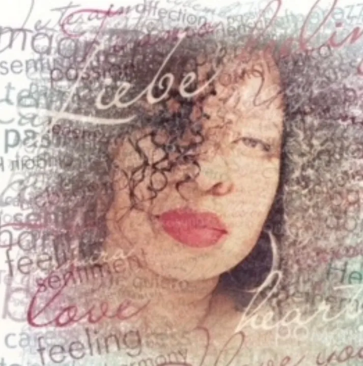

Fiche de lecture
Auteure de New Romance engagée
Mo Gadarr
romance engagée n. f.
- Histoire d’amour qui mêle les codes de la New Romance à des sujets de société.
- Genre créé par Mo Gadarr, professeur de français et romancière. « Une New Romance engagée qui bouscule les cœurs. »

Nouveau romanElle est la fille du Père Noël & je suis le fils du Père Fouettard
Table des matières
Sommaire
Quatre chapitres et un post-scriptum pour entrer dans l’univers de Mo Gadarr.
Chapitre premier
Le nouveau roman
Travaux pratiques · Exercice n° 1
Posez avec Wendy & Dante
Matérielun téléphone et un sourire.
- Choisissez votre camp :
- Activez votre caméra.
- Glissez les héros à côté de vous.
Résultatvotre photo de Noël est prête à partager.

Chapitre II
La bibliothèque
Surligné : le sujet de société du roman
Surligné : le sujet de société que le roman aborde. C’est cela, une « romance engagée ».
Voir tous les romansChapitre III
L’auteure

Le saviez-vous ?
BulletinÉlève : Mo Gadarr
Appréciation généraleAuteure hybride, connectée et engagée.
Chapitre IV
Le journal
Toutes les actualitésPost-scriptum · Coupon-réponse